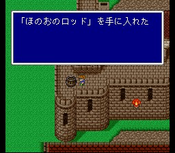

칼낙 마을
마을의 불이 꺼져 있습니다. 불꽃의 로드를 챙길 수 있습니다.

여왕이 악몽에 시달리며 쓰러져 있습니다.
칼낙성이
폭발한 후에 무기상이 한 사람 더 생겨 있으니 체크하세요. 무기를 만드는 데 크리스탈을
사용할 수 없게 되어 값이 올랐다고 합니다.
도구상: 포션, 해독제, 안약, 여인의 키스, 요술방망이, 금바늘, 피닉스의 꼬리깃, 텐트
무기상: 미스릴나이프, 미스릴스워드, 미스릴해머, 화염의 로드, 얼음의 로드,
번개의 로드, 플레일, 미스릴스피어, 쿠나이, 채찍, 기야만의 종
방어구상: 미스릴실드, 미스릴헬름, 깃털모자, 미스릴아머,
은의 가슴받이, 실크로브, 미스릴장갑, 은팔지
마법상: 백마법 레벨1~3(미니멈
제외), 흑마법 레벨1~3, 시공마법 레벨1~3(스피드, 레비테트, 텔레포 제외)